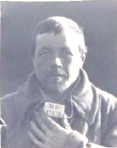
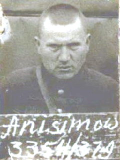

Из неизданной Книги Памяти пропавших без вести Фонда «Жить и Помнить»
АНДРЕЕВ Михаил Андреевич родился 14 ноября 1909 г. в Новоторжском (Торжокском) р-не Калининской области. Мать Егорова. Крестянин. Католик. Русский. Довоенный адрес: г. Торжок, Городская больница. Жене Андреевой Нине Никандровне.
В армию призван Новоторжским ОГВК. Рядовой 838-го стрелкового полка. Попал в плен 14 августа 1941 г. под Медведево. Регистрацию прошёл в шталаге № 304 Цайтхайн. Номер регистрации 33068. 6 августа 1942 г. переведён в шталаг IV C Вистриц. В сентябре 1942 г. направлен в рабочую команду Зеестадл. Погиб 17 ноября 1942 г. Похоронен в братской могиле на кладбище советских военнопленных в г. Эрвенице (немецкий Зеестадл), р-н Хомутов, Чешская Республика.
АНДРЕЕВ Михаил Андреевич родился в 1902 г. в д. Ильино Брусовского (Удомельского) р-на Калининской области. Крестьянин. Православный. Русский. Жена Екатерина Еф.
В армию призван Брусовским РВК. Рядовой 1116-го стрелкового полка. Попал в плен 17 октября 1941 г. под ст. Чудово Ленинградской области. Регистрацию прошёл в шталаге № 302 Гросс Борн-Вестфаленхоф (Редеритц). Номер регистрации 14437. Зачислен в лагерный строительный батальон № 102. Погиб 12 декабря 1941 г. Похоронен в братской могиле на специальном кладбище польских и советских военнопленных неподалёку от г. Надажице, у шоссе Сыпнево-Надажице, Западно-Поморское воеводство, Республика Польша.
В Книге памяти, Удомельский р-н, числится пропавшим без вести в декабре 1941 г.
АНДРЕЕВ Михаил Иванович родился 20 января 1912 г. в г. Конаково Калининской области. Машинист. Православный. Русский. Довоенный адрес: г. Конаково, ул. Муравьёвская, д. 4. Жене Андреевой Ефросинье.
В армию призван Конаковским РВК в 1941 г. Рядовой 260-го стрелкового полка. Попал в плен 14 сентября 1941 г. под Ленинградом. Регистрацию прошел в шталаге № 326 Фореллькруг/Зенне. Номер регистрации 14736. Погиб в шталаге VI A Хемер при шахте «Наш Фритц-667» 17 октября 1942 г. Похоронен в братской могиле на кладбище советских военнопленных Руссенфридхоф/Хемер I Хёклингсер-Вег у г. Дортмунд, земля Северный Рейн-Вестфалия.
АНДРЕЕВ Никита Андреевич родился в 1904 г. в д. Жуково Торопецкого р-на Калининской области. Крестьянин. Русский. Жена Пелагея.
В армию призван Торопецким РВК. Рядовой-пехотинец. Попал в плен будучи раненым 29 августа 1941 г. под Брянском. Регистрацию прошел в шталаге № 321 Эрбке. Номер регистрации 22097. Погиб в лагере 31 октября 1941 г. Причина смерти в документах не указана. Похоронен в братской могиле на мемориальном кладбище советских военнопленных в г. Эрбке, земля Нижняя Саксония.
АНДРЕЕВ Николай Андреевич (медальон) родился в 1902 г. в п. Сонково Сонковского р-на Калининской области. Жена: Андреева Елена Николаевна.
Призван Сонковским РВК Калининской области. Рядовой 453-го стрелкового полка. Найден: май 2004 г., Московская область, Можайский р-н, Борисовский с/с, д. Борисово. Захоронен: 29 мая 2004 г., Московская область, Можайский р-н, Борисовский с/о, д. Борисово.
АНДРЕЕВ Пётр Андреевич родился 26 июня 1905 года в д. Босково Ашевского (Бежаницкого) района Калининской (Псковской) области. Крестьянин, пекарь. Православный. Русский. Мать Ефимова. Рост 168 см, блондин.
В армию призван Ашевским РВК. Рядовой 44-го стрелкового полка. В плен попал 9 ноября 1941 года под городом Тихвин Ленинградской области. Регистрацию прошел в шталаге № 307 Бяла-Подляска неподалеку от Бреста на территории Польского генерал-губернаторства. Регистрационный номер 22222. Сообщил о себе неверные данные – Босковский район Калининской области. Установлен по Книге памяти Псковской области. 15 января 1943 года переведен в Лотарингию, в шталаг XII F Больхен/Форбах (Форбак). 26 апреля 1944 года лишен статуса военнопленного и передан в гестапо города Саарбрюкен. Расстрелян в политической тюрьме этого города. Похоронен на городском кладбище г. Саарбрюкен, земля Саар.
АНДРЕЕВ Пётр Андреевич родился в 1906 г. в д. Медведица Аксентьевского с/с Ильинского (Западнодвинского) р-на Смоленской (Калининской) области. Крестьянин. Православный. Русский. Сирота. Жена Анна.
В армию призван Ильинским РВК. Рядовой строительного батальона. Попал в плен 28 июня 1941 г. под Минском в Белоруссии. Регистрацию прошёл в шталаге IV B Мюльберг/Нойбурксдорф. Номер регистрации 122033. Заболел. 26 января 1942 г. направлен в лазарет шталага № 304 Цайтхайн. Погиб в лазарете 12 февраля 1942 г. Похоронен в братской могиле на мемориальном лагерном кладбище советских военнопленных Цайтхайн II/Якобсталь, участок 409, блок 1, ряд 6, в г. Риза, земля Саксония.
В Книге памяти, Западнодвинския р-н, числится пропавшим без вести в ноябре 1944 г.
АНДРЕЕВ Пётр Андреевич (медальон) родился в 1910 г. в Дубковском с/с Осташковского р-на Калининской области. Семья: Ленинградская обл., Ораниенбаумский р-н, д. Калище.
В армию призван Ораниенбаумским РВК Ленинградской области. Рядовой. Найден: 1992 г., Ленинградская обл., Киришский р-н, в урочище Ларионов Остров. Захоронен: 17 июня 1992 г., Ленинградская обл., Киришский р-н, г. Кириши, кладбище «Чирково».
АНДРЕЕВ Тимофей Андреевич родился 1 апреля 1908 г. в д. Никольщино Николищинского с/с Бельского р-на Смоленской (Калининской) области. Крестьянин. Православный. Русский. Мать Игнатьева. Жена Евдокия.
В армию призван Бельским РВК. Рядовой 535-го стрелкового полка. Попал в плен 5 октября 1941 г. под г. Дорогобуж Смоленской области. Регистрацию прошел в шталаге № 321 Эрбке. Номер регистрации 17475. Погиб в шталаге XI B Фаллингбостель 4 июля 1942 г. Похоронен в братской могиле на мемориальном лагерном кладбище советских военнопленных в г. Фаллингбостель, земля Нижняя Саксония.
АНДРЕЕНКОВ Пётр Степанович родился 8 октября 1918 г. в д. Моняково Верховского с/с Бельского р-на Смоленской (Калининской) области. Крестьянин, кузнец. Потерявший Бога. Русский. Мать Сергеева.
В армию призван Бельским РВК. Рядовой. Попал в плен 23 июня 1941 г. под г. Брестом. Регистрацию прошёл в Нижней Силезии, В шталаге № 318 Ламсдорф (Гросс-Розен). Номер регистрации 1273. Погиб в лагере 25 октября 1941 г. Похоронен в братской могиле на мемориальном лагерном кладбище советских военнопленных на полигоне Ламсдорф в г. Ламбиновице, Опольское воеводство, Республика Польша.
В Книге памяти, Бельский р-н, числится пропавшим без вести в 1943 г.
АНДРЕЯНОВ Павел Алексеевич родился 6 июля 1913 г. в д. Анушино Святосельского с/с Осташковского р-на Калининской области. Крестьянин. Православный. Русский. Мать Петрова. Жена Анна.
В армию призван Осташковским РВК. Рядовой 639-го артиллерийского полка. Попал в плен 19 июля 1941 г. в Калининской области. Регистрацию прошёл в Восточной Пруссии, в шталаге Штаблак I A/Кляйн-Дексен Номер регистрации 1088. Погиб в лагере 8 марта 1942 г. Похоронен в братской могиле советских военнопленных на лагерном кладбище в п. Фурманово Багратионовского р-на Калининградской области.
В Книге памяти, Осташковский р-н, числится пропавшим без вести в феврале 1942 г.
АНДРИАНОВ Флор Андрианович (медальон) родился в 1914 г. в д. Селиванцево Столипинского с/с Зубцовского р-на Калининской области.
В армию призван Зубцовским РВК. Рядовой. Найден: август 2007 г., Смоленская область, Ярцевский р?н, Мороховское с/п, д. Чуркино, урочице Жидки. Захоронен 15 сентября 2007 г., Смоленская область, г. Ярцево, «Поле Памяти».
В Книге памяти нет.
По формам учёта ЦАМО РФ не проходит.
АНДРИЯНОВ Иван Андреевич родился 26 мая 1919 г. в п. Рамешки Рамешковского р-на Калининской области. Крестьянин. Православный. Русский. Мать Пелагея.
В армию призван Рамешковским РВК. Рядовой 283-го артиллерийского полка. Попал в плен 26 июля 1941 г. Регистрацию прошел в шталаге II A Нойбранденбург. Номер регистрации 81358. Погиб в лагере 12 февраля 1942 г. Похоронен в братской могиле советских военнопленных на лагерном кладбище в г. Нойбранденбург, земля Мекленбург-Передняя Померания.
АНДРИЯНОВ Михаил Петрович родился 11 января 1907 г. в д. Марьино Конаковского р-на Калининской области. Крестьянин. Православный. Русский. Довоенный адрес: г. Конаково, ул. Лиговка, д. 46. Жене Андрияновой Марии Егоровне.
В армию призван Конаковским РВК. Попал в плен 21 октября 1941 г. под г. Дмитровом Московской области. Регистрацию прошел шталаге № 312 Торн. Номер регистрации 13096. Погиб в лагере 16 января 1942 г. Похоронен в братской могиле на специальном кладбище советских военнопленных на военном полигоне «Глинки» в д. Глинки, гмина Велька Нешавка, Куявско-Поморское воеводство, Республика Польша.
АНДРОНОВСКИЙ Николай Ильич родился 2 декабря 1905 г. в Бельском р-на Смоленской (Калининской) области. Довоенный адрес: г. Белый, ул. Энгельса, 40. Плотник. Православный. Русский. Мать Кошенцова. Жена Елизавета Ильинична.
В армию призван Бельским РВК. Рядовой 22-й инженерно-строительной бригады. Попал в плен 14 апреля 1942 г. под г. Вязьма Смоленской области. Регистрацию прошел в шталаге № 352 Минск. Номер регистрации 11369. Погиб в лагере 1 октября 1942 г. Похоронен в братской могиле на мемориальном лагерном кладбище советских военнопленных «Масюковщина» в г. Минск, Республика Беларусь.
АНДРОНОВСКИЙ Сергей Сергеевич родился 5 июля 1913 г. в г. Белый Бельского р-на Смоленской (Калининской) области. Довоенный адрес: г. Белый, ул. Чкалова, 13. Маляр. Православный. Русский. Мать Елизавета Андреевна.
В армию призван Бельским РВК. Рядовой 1008-го стрелкового полка. Попал в плен 28 августа 1941 г. Регистрацию прошел в Нижней Силезии, в шталаге № 308 Нойхаммер-Вест. Номер регистрации 43416. Зачислен в 128-й лагерный строительный батальон. Погиб в батальоне 22 января 1942 г. Похоронен в братской могиле на интернациональном кладбище военнопленных неподалеку от г. Жагань, гмина Свентошув, у шоссе из Жагани в Илову, Любуское воеводство, Республика Польша.
АНИСИМОВ Алексей Матвеевич родился 21 февраля 1918 г. в д. Буланово Погорельцевского с/с Рамешковского р-на Калининской области. Крестьянин. Православный. Русский. Адрес для переписки: г. Калинин, ул. Киселёва (так в документе), д. 40. Сестре Воробьёвой Александре.
В армию призван Рамешковским РВК. Рядовой-пехотинец. Попал в плен 7 октября 1941 г. на территории Смоленской области. Регистрацию прошёл в шталаге № 319 Хелм на территории Польского генерал-губернаторства. Номер регистрации 3354. Находился в различных рабочих командах и лагерях военнопленных. 17 августа 1944 г. переведён в шталаг VI А Хемер при шахте «НашФритц-667». Зачислен в состав рабочей команды № 506 Хеессен. Погиб при бомбёжке 29 ноября 1944 г. Похоронен 30 ноября 1944 г. на общинном кладбище Хеессен-Досбекер Фридхоф, могила № 3/49, у замка Хеессен неподалёку от г. Мюнстер, земля Северный Рейн-Вестфалия.
В Книге памяти Тверской области нет.
АНИСИМОВ Дмитрий Дмитриевич (медальон) родился в 1911 г. в д. Поддубное Раменского с/с Теблешского (Бежецкого) р-на Калининской области. Семья: Анисимова Мария Михайловна - жена, Калининская обл., Теблешский р-н, д. Поддубное.
В армию призван Теблешским РВК. Рядовой. Найден: июль 1993 г., Новгородская обл., Новгородский р-н, д. Мясной Бор. Захоронен: 30 августа 1993 г., Новгородская обл., Новгородский р-н, д. Мясной Бор.
(продолжение следует) |